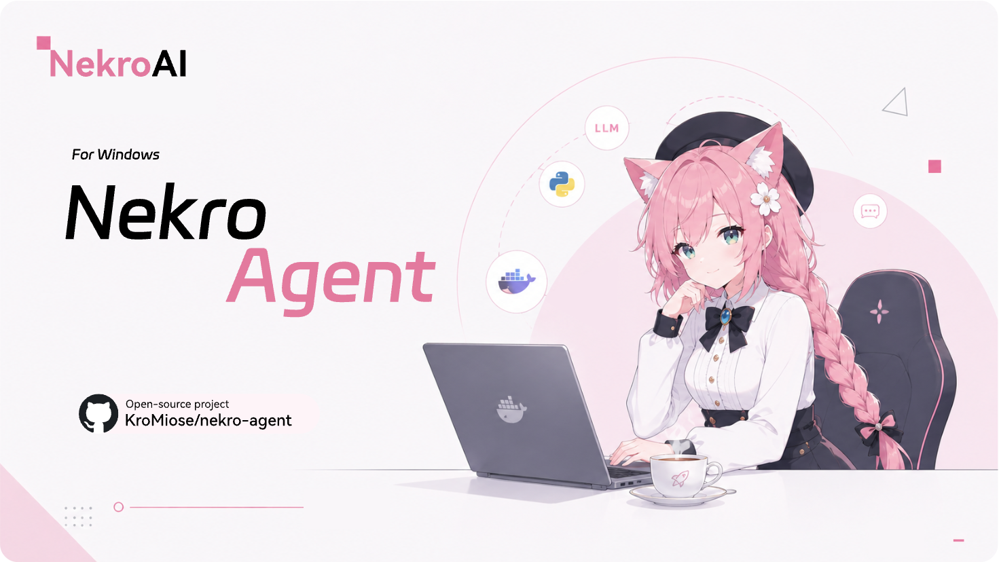

首次运行向导
从环境检测到发行版创建、Docker 安装和服务部署，按步骤完成初始化。
启动器把 Windows 用户需要反复处理的部署、状态、端口、镜像和日志收进同一套界面里。
从环境检测到发行版创建、Docker 安装和服务部署，按步骤完成初始化。
创建、切换、停止和移除多个 Nekro Agent 实例，独立保存端口、目录和频道。
检查 Nekro Agent、NapCat 和 Sandbox 镜像状态，拉取更新并重建容器。
直接访问 Nekro Agent / NapCat 页面，查看应用日志、运行日志和更新输出。

面向长期使用设计，不只解决首次安装，也覆盖之后的升级、迁移和故障排查。
检测 WSL2、NekroAgent 发行版、Docker daemon 和 Compose 可用性。
选择 Lite 或 NapCat 模式，配置实例名称、端口和数据目录。
在总览、镜像管理、日志中心和设置页里完成日常维护。
更新 Nekro Agent 镜像，也可以检查启动器自身新版本。
启动器仓库维护 Windows 桌面体验，NA 主仓库维护 Nekro Agent 本体。